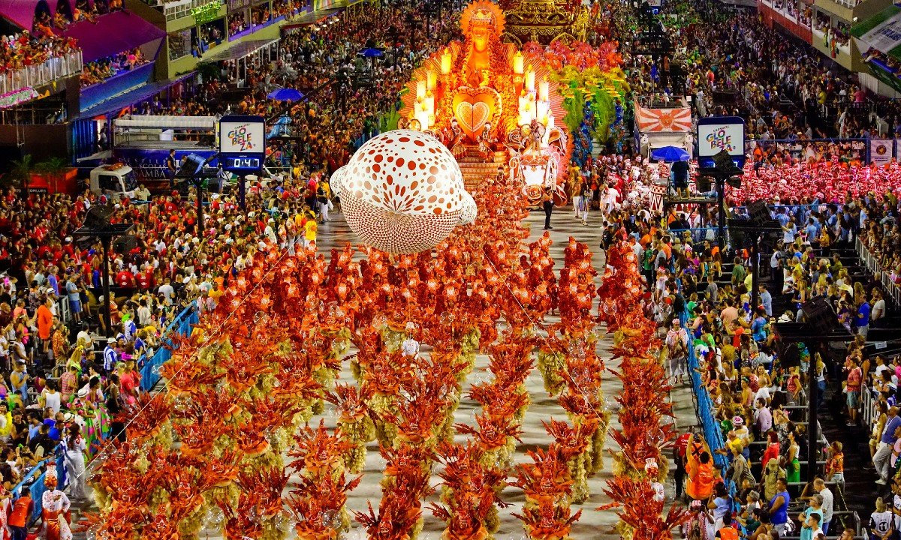

O Carnaval do Rio de Janeiro é uma festa mundialmente famosa, celebrada por diversas manifestações, como desfiles de escola de samba, bailes, blocos e bandas. A festa nas ruas, que estava decadente, renasceu com muita força fora do circuito da Passarela do Samba.
